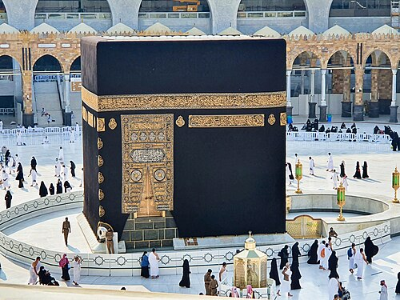

5. Uvjet za namaz: okretanje prema Kibli
Koji je peti uvjet za namaz?
Peti uvjet za klanjanje namaza je okrenuti se prema Kibli. U gradu Meki u Saudijskoj Arabiji nalazi se mubarek mjesto Ka'ba i tamo se okrećemo kad klanjamo (Kibla).
Šta je to Kibla?
Kibla je strana svijeta na koju se u namazu obavezno okreću svi muslimani svijeta. To je ona strana na kojoj se nalazi mubarek Ka'ba.
Gdje se nalazi Ka'ba?
Ka'ba se nalazi u gradu Meki, u Saudijskoj Arabiji a to je jugoistočno od Bosne.
Ako ne znamo gdje je smjer Meke, a nemamo koga pitati, onda se okrećemo tamo gdje mislimo da je Kibla.
Ka'ba je prvi objekat koji je izgrađen da bi se u njemu moglo klanjati Jednom i Jedinom Bogu.
Ka'ba se nalazi u Meki. Ona je više puta obnavljana. Sada je to jednostavan objekat u obliku kocke, ima ravan krov i nema prozora. Ka'ba se prekriva specijalno uređenim prekrivačem koji se svake godine mijenja. U Ka'bu se ulazi samo u posebnim prilikama.
Oko nje se nalazi harem u kome muslimani cijelog svijeta klanjaju namaze, uče Kur'an i čine tavaf (obilaze oko Ka'be). To je najsvetije mjesto za cijeli islamski svijet.
